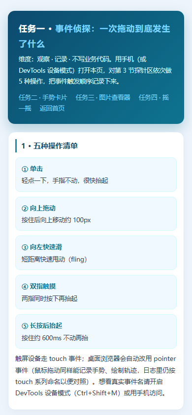
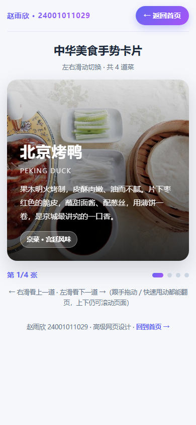
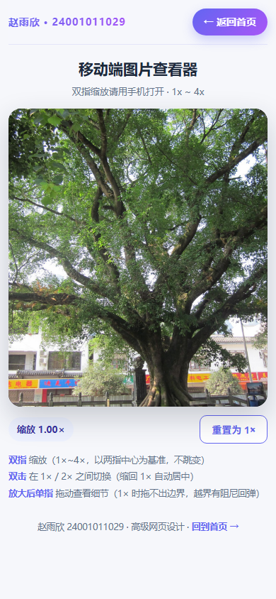
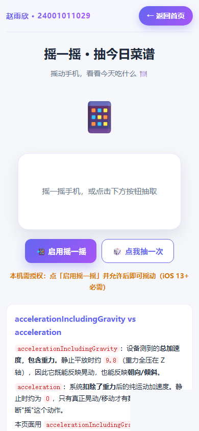

高级网页设计 · 2026-2027-1 · 4 关递进任务全部完成（含加分项）
每关一个独立 HTML，均可从本项目首页进入；页面内均有「返回首页」链接。
5 种操作的事件顺序记录表 + 实时探针（手机/鼠标都能测）+ 三问解答 + 手指轨迹草图。
查看记录 → ⭐⭐ 任务二4 道菜卡片左右切换：跟手拖动、40px 阈值防误触、甩动翻页、300ms 冷却、边界回弹提示。
滑动体验 → ⭐⭐⭐ 任务三双指缩放 1×~4×（焦点保持不跳）、双击 1×/2×、放大后拖动、越界阻尼回弹、旋转不丢状态。
缩放体验 → ⭐⭐⭐⭐ 任务四devicemotion 合成加速度阈值 18 判摇、1.5s 冷却、iOS 按钮授权、无传感器降级按钮。
摇一摇体验 →| 任务 | 课程验收点 | 我的实现 | 结论 |
|---|---|---|---|
| 一 | 能回答 move 次数与距离关系、click 先后、touchcancel 后果 | 记录表 + 三问解答：慢拖 200px 约 40~60 次 move、快甩同距离仅 8~15 次；click 在 touchend 之后；touchcancel 收不到 touchend，必须清定时器 | ✓ 达成 |
| 二 | ① 短距离误触不切换 ② 快速连滑不跳两张 ③ 拖动时页面不跟着滚 | 40px 阈值 + 轴锁定；300ms 冷却；容器 touch-action: pan-y 只接管横向；另加跟手拖动与甩动速度判定 |
✓ 达成 |
| 三 | ① 以两指中心为基准不跳 ② 边界阻尼/限制 ③ 1× 不能拖出边界 ④ 旋转不丢状态 | 焦点保持公式 t' = m' - (m - t)·(s'/s)；越界 ×0.35 阻尼、松手硬回弹；scale=1 时平移上限为 0；orientationchange 后重新钳位 |
✓ 达成 |
| 四 | ① 一次摇动只触发一次 ② 无传感器不报错 ③ iOS 按钮授权 ④ 讲清两个 acceleration 的区别 | 阈值 18 + 1.5s 冷却；检测 'ondevicemotion' in window 失败即提示并给按钮；requestPermission() 绑定在按钮手势里；页面下方用整块说明卡对比两字段 |
✓ 达成 |
| 加分 | 轨迹草图 / 缩放指示器 / 其他拓展 | 任务一手绘轨迹草图 + 内联 SVG；任务三实时倍数指示器与「重置为 1×」；任务二跟手拖动与甩动翻页 | ✓ 已做 |
四张截图由无头浏览器按 390×844 视口真实渲染，未做后期修图；手机上打开效果一致。




说明：任务四截图是电脑端打开的状态，页面按能力检测停在"需授权/不支持"的提示上，并保留「点我抽一次」降级按钮——这正是验收②要求的友好提示，不是报错。
e.touches[0]，拿到的是 undefined现象：任务二第一次跑起来，滑动松手后控制台报 Cannot read properties of undefined，偶发还能算出一个奇怪的位移。
原因：抬手的瞬间，那根手指已经从 touches 列表里移除了；单指时列表为空，双指时 touches[0] 只是另一根没抬起的手指。
解决：touchend 一律改用 e.changedTouches[0]——它专门保存"本次变化的手指"。改完后位移计算稳定，双指操作也不再串数据。
现象：手指已经划出去很远，卡片却纹丝不动，松手才"啪"地跳过去，手感很假。
解决：补上 touchmove 实时平移：translateX(calc(-index*100% + dx px))，跟手阶段关掉 transition，touchend 再恢复 0.3s 过渡做吸附；越界方向位移只跟 35%，形成阻尼。
touch-action 加错位置，整页滚不动现象：为了接管手势，一开始写在了 body 上，结果整个页面上下都滑不动。
解决：只加在需要接管手势的容器上：任务二用 pan-y（接管横向、保留纵向滚动），任务三的查看器用 none（整块区域都归手势）。
解决：所有 <img> 都加了 onerror 回退（卡片换成生成图、摇一摇页面回退到 emoji），保证断网或防盗链时页面仍然可看，不会出现大片空白。
完整原文（含时间、模型）已追加到项目根目录的 zyx1029_prompt.md，这里是摘要：
| 时间 | 模型 | 提示词摘要 | 产出 |
|---|---|---|---|
| 2026-11-16 13:55 | Qwen3.8-Flash | 按课程第 7 节完成 4 关递进任务，命名用 zyx1029_，每页写文件头与函数注释 | 任务一~四 四个页面 |
| 2026-11-16 14:54 | claude-opus-6 | 轨迹草图有问题帮我改好 | 改为内联 SVG 矢量草图 |
| 2026-11-16 14:59 | claude-opus-6 | 轨迹草图部分功能没有实现，帮我修改这部分内容 | 替换失效外链 + onerror 回退 |
| 2026-11-16 15:43 | DeepSeek-V4.1-Flash | 给我生成最完美的作业（粘贴整页课程内容） | 任务二升级跟手+甩动、真实截图、本提交页 |
touches 里移除了：单指时列表为空，touches[0] 直接 undefined；双指时拿到的是还留在屏幕上的另一根手指。而 changedTouches 记录的是"本次事件发生变化的手指"，一定包含刚抬起的那根，所以抬手坐标必须从它取。t' = m' - (m - t)·(s'/s)。其中 m 是上一帧两指中点、m' 是当前帧中点、t 是当前平移、s'/s 是本帧缩放比例。它的含义是"缩放前手指下面压着哪一个图像点，缩放后这个点仍要留在手指下面"，所以图片会围绕两指中心缩放，不会突然跳走。另外每一帧都按新边界重新钳位，避免累计误差。pan-y。'ondevicemotion' in window：不支持就直接显示"当前设备不支持摇一摇"，同时保留「点我抽一次」按钮，功能不缺失、控制台不报错；支持但没授权（iOS 13+）则提示点「启用摇一摇」授权；回调里如果 accelerationIncludingGravity 为空也会直接 return，不会抛异常。| 维度 | 分值 | 自评 | 依据 |
|---|---|---|---|
| 事件理解 | 25 | 24 | 四个事件触发时机、三个 TouchList 的区别、changedTouches 原因都能讲清，并做了实时探针验证 |
| 手势实现 | 30 | 29 | 阈值/轴锁定/冷却/阻尼/回弹齐全，且支持跟手与甩动 |
| 移动端体验 | 20 | 19 | 跟手、无页面误滚、过渡动画、旋转与不同尺寸都已处理 |
| 降级与排错 | 15 | 15 | 无传感器、无权限、图片失败都有友好提示，控制台无报错 |
| 规范与记录 | 10 | 10 | zyx1029_ 前缀、文件头信息、函数注释、提示词记录齐全 |